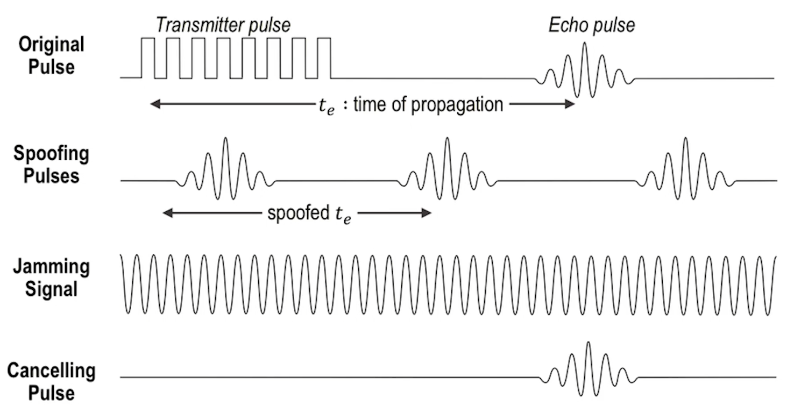

ICPSS Lecture Notes - Lesson 14 - Threats to CPS in Other Domains
Threats to CPS in Other Domains
Health Care and Medicine
- For our purposes, these domains consist of:
- Monitoring health conditions of the patients and taking necessary actions
- Technologies related to home care, assisted living, smart operating rooms, smart medical devices, and smart prescriptions
Security and Privacy in Implantable Medical Devices
- In 2001, the estimated number of patients in the United States with an iimplantable medical device (IMD) exceeded 25 million
Example Study
- A 2008 study analyzed the security and privacy properties on an implantable cardioverter defibrillator (ICD)
- This model of ICD includes pacemaker technology and is designed to communicate wirelessly with a nearby external programmer in the 175kh frequency range
- The security and privacy properties of a common ICD were assessed and attacks on privacy, integrity, and availability were conducted
- What is an ICD?
- An ICD is a device that monitors and responds to heart activity
- ICDs have modes for pacing, wherein the device periodically sends a small electrical stimulus to the heart, and for defibrillation, wherein the device sends a larger shock to restore normal heart rhythm
- A physician surgically implants the ICD below the patient’s clavicle and close to the skin. The physician also implants electrical leads that connect the ICD to the heart muscle
- Post-surgery, a health care practitioner can use an external programmer to perform diagnostics, read and write private data, and adjust therapy settings
- A malfunctioning or maliciously configured ICD could harm a patient in multiple ways
- Inside the ICD is a magnetic switch. A magnetic field in proximity to this switch causes it to close, which in turn causes the ICD to wirelessly transmit telemetry data, including electrocardiogram (EKG) readings
- The ICD wirelessly communicates with the external programmer using the 175kHz band, which is intended for short-range communications
- The researchers reverse-engineered the communication protocol for the ICD, and implemented several software-radio-based attacks
- Multiple impacts demonstrated. Basically a fish in a barrel scenario.
Intelligent Transportation
- Medium/large scale
- Improving safety, coordination, and services in traffic management and real-time info sharing
- Many benefits to both efficiency and safety
Attacking Vehicle Advanced Driver Assistance Systems
- In 2016, researchers presented a study demonstrating attacks against these systems
- To minimize accidents and improve the driving experience, various advanced driver assistance systems (ADAS) have been created
- Attacks on ADAS are emerging
- Attacks utilize the underlying principals of sensors to blind or deceive them, e.g. exploiting the active probing mechanisms that are used to detect barriers
- Vehicle ADAS tricked into believing objects in the vehicle’s way are no longer there, or tricked to make obstacles appear
Vehicle Sensors
- Ultrasonic sensors
- Proximity – 2m
- Proximity sensors that aim at detecting barriers within several meters from a car body. They are mainly designed for low speed scenarios, e.g. parking assistance
- Forward-looking cameras
- Short Range – 30m
- Used for lane departure warning, traffic sign recognition, and backward cameras for parking assistance. Short-range Millimiter-wave (MMW) radars (Short-range radar, SRR) serve for blind spot detection and cross traffic alert
- LiDAR and medium-range MMW radars (Medium-range radar, MRR)
- Medium Range – 80-160m
- Operate in medium range and assist collision avoidance and pedestrian detection
- Long-range MMW radars (Long-range radar, LRR)
- Long Range – 250m
- Designed for Adaptive Cruise Control (ACC) at high speeds
What is Required for Sensor Attacks?
- Sensors relying on distinctive physical principles require different equipment
- Ultrasound transceivers used in exploit against ultrasonic sensors
- Radio frequency (RF) transceivers used in exploit against MMW radars
- Lasers used in exploit against cameras
- No physical contact with the targeted sensors, thus the attacks were “contactless”

- This study launched both “spoofing” and “jamming” attacks
- Spoofing attacks involved emitting carefully crafted signals similar to the real signals transmitted to the sensors normally. Thus the sensors interpreted the spoofed signals as real ones, and responded accordingly.
- Jamming attacks involved a very strong signal, which interfered with the real ones.